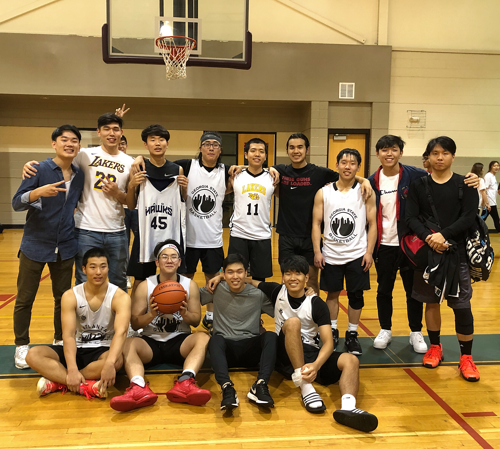

Outside of School!
Outside of school, I would say I am a relatively active guy. I try to go to the gym and lift weights at least 5 times a week. I also enjoy playing basketball any time I can (which is everyday if I am not busy). Outside of the gym, I am very involved in my church. I teach the 1st-3rd grade Sunday school class, the youth Bible Drill class and volunteer in many other areas.
